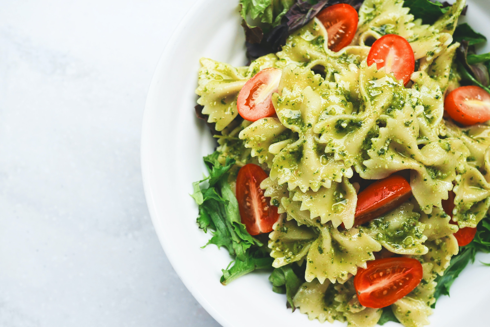
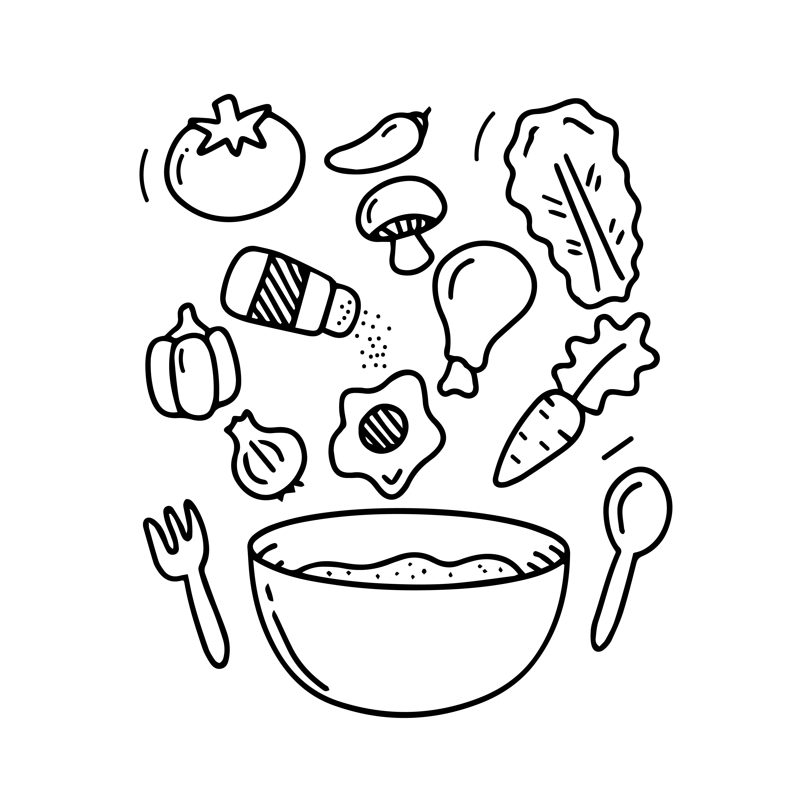

Pesto Pasta
Ingredients:
- 400g farfalle pasta
- 3 tbsp olive oil
- 50g pine nuts
- 5 tbsp pesto (homemade or store bought)
- 10 large basil leaves
- ½ lemon, juiced and zested
- 50g parmesan or vegetarian alternative, shaved
To serve (optional)
- halved cherry tomatoes, drained sweetcorn, peas, rocket

Nutrition: Per serving
kcal
415
fat
20g
saturates
4g
carbs
43g
sugars
1g
fibre
4g
protein
13g
salt
0.1g
Method
- Cook the pasta following pack instructions, then drain and toss in 1 tbsp of the oil. Transfer to a large bowl and set aside to cool, tossing occasionally so it doesn't stick.
- Toast the pine nuts in a dry frying pan over a low heat, constantly moving them for 4-5 mins until browned. When the pasta has completely cooled, toss through the pesto, toasted pine nuts, remaining olive oil, basil, lemon zest and juice, and the tomatoes, sweetcorn, peas and rocket, if using. Season, then scatter over the parmesan and serve.
STEP 1
STEP 2
